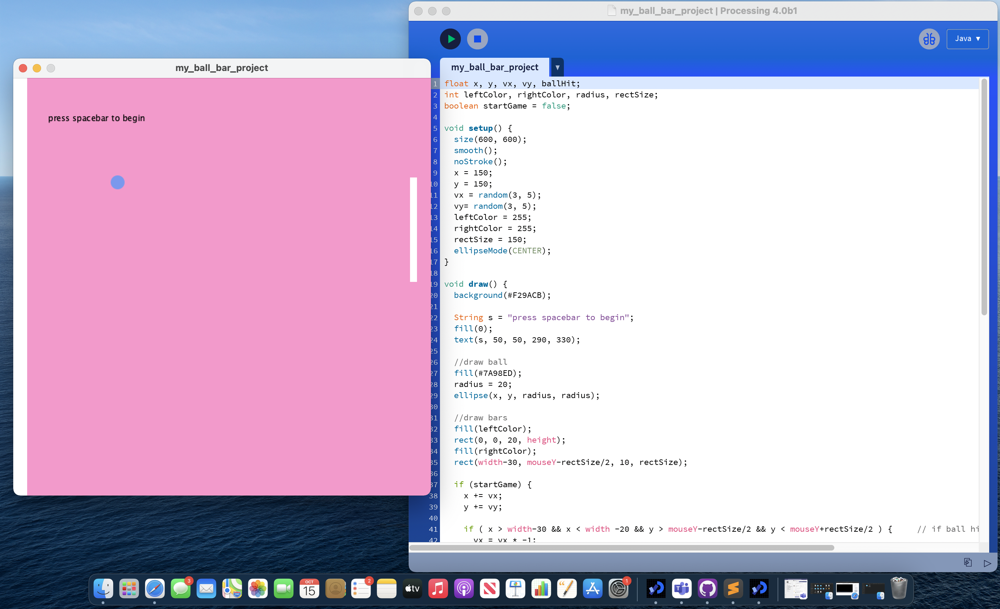
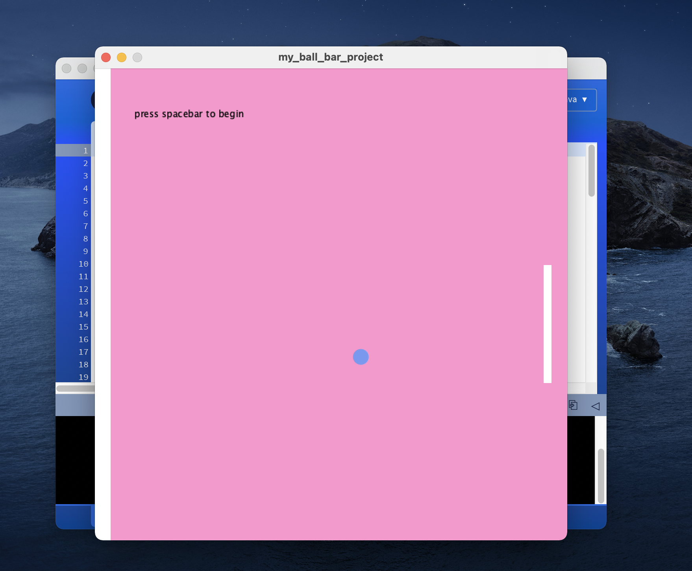
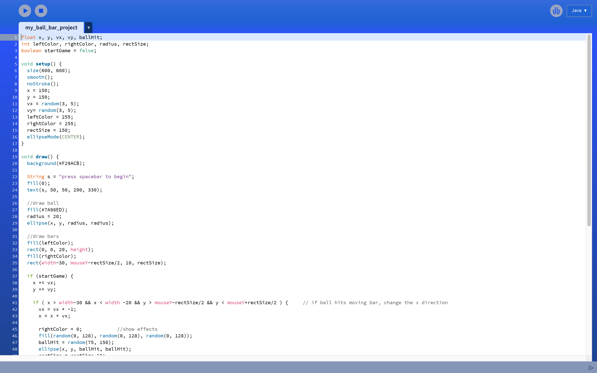
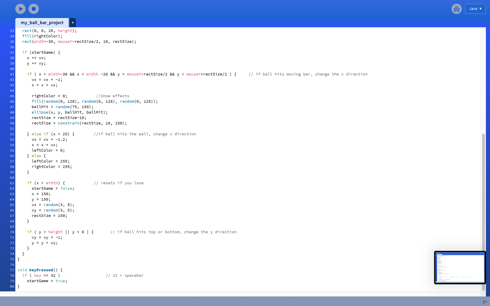

Madeha AhmedI have only really dabbled in scratch, HTML and python, so this is my first experience with a version of Java. It was great, though it is a little more challenging than python. |
 | |
|
|
||
Bootcamp 2021: Bar Bounce ProjectMy first programming project, concluding the 2 week Programming Bootcamp at City (2021). In my processing project, I started by declaring my variables and in void draw(), began with drawing my ball and bar. I included some if statements to allow different outcomes to occur. I also generated effects as a result of the ball hitting either bars and randomised the colours of the circular effects each time, which was a good challenge for me. Check out the code on Github: https://github.com/mad3ha3/bootcamp-project | ||
|    | ||